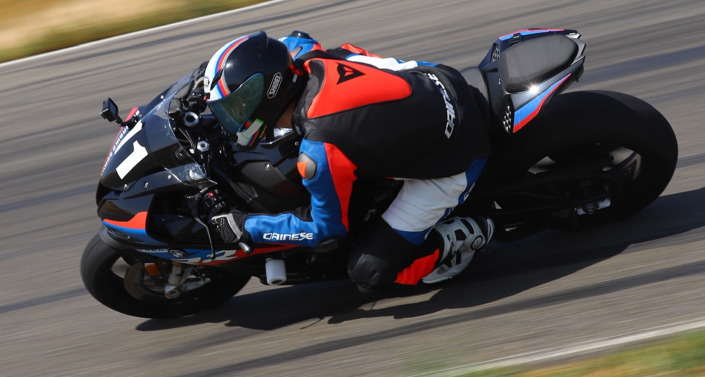

About My Website
This website documents my efforts to learn, apply, and understand topics related to data, artificial intelligence,
machine learning, and computer vision. I hope my articles and projects will teach others a thing or two about these
captivating topics.
About Me
My name is Sason (Sauce-on) or Reza, whichever is easier.
tldr; I'm a ML DevOps Engineer working in precision agriculture with interests in data, AI,
and computer vision. I've been around computers my whole life and, as a result, developed a passion for optimizing
everything in sight. My other passions - motorsports, competitive gaming, bodybuilding - fuel my min-maxing
lifestyle. I graduated with a Cybersecurity-focused Computer Science degree, but have pivoted to AI/ML and data
because it brings me more joy and has far more positive impacts to our world.

I have been surrounded by computers and technology my whole life, and, as a result, developed a genuine
passion for learning, improving, and optimizing (also known as min-maxing). This passion stems from playing
competitive video games, both online and against my brother/cousins, throughout my childhood. I was the youngest kid
in the family, so I was never allowed to play first. Instead, I watched attentively, analyzed their moves, and noted
any mistakes or moves which could be optimized. When it was finally my turn to play, I would capitalize on their
mistakes and optimize my moves to quickly beat them. My competitive gaming family turned me into the min-maxer I am
today, and now I'm able to apply these analytical techniques to all aspects of my life and career.
I graduated with a Cybersecurity-focused Computer Science degree in 2018. During college I was a network
test engineer intern at HPE. Following graduation, I joined HPE full-time for six years as a network test engineer,
systems software engineer, embedded software engineer, and almost a data engineer. In 2023, I left the company to
pursue my passion for AI and data engineering. I am now a ML DevOps Engineer at Verdant Robotics, a precision
agriculture startup in Hayward, CA. I'm fortunate to be around a team of brilliant and passionate engineers.
AI and data engineering are exactly the fields to fuel my curious mindset:
Endless learning opportunities about unique and creative methodologies created by people all over the world. All of
the other Computer Science fields simply can't match the excitement of AI and data.
When I'm not working, I'm listening to music, riding my motorcycle, hanging out with my cats, or traveling
around Japan. I'm always open to music recommendations of any kind, so please send them my way!
My personal projects are all over the place. They are born for two reasons: 1) I want to learn a new
technology and apply it to a project, and 2) it's something that I'm passionate about and will bring me joy. For
example, my SongSwap-Social application was created because I wanted to learn about web development, data pipelines,
and AWS. SongSwap allows my friends and I to discover new music and share our favorite songs with each other;
it's our personal Spotify Wrapped and social media combined!